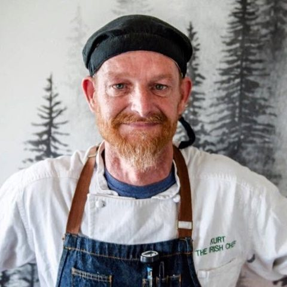
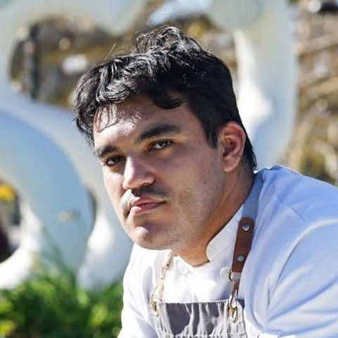
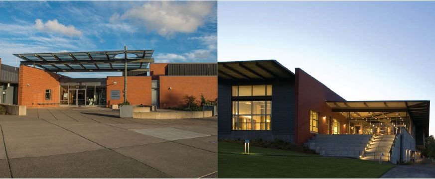
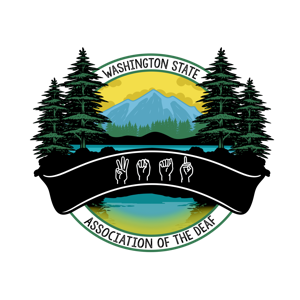

125 years, back where it began.
On September 27, 2026, PSAD marked its 125th anniversary at the Mercer Island Community & Event Center, on the island where the first picnic was held. Generations came together to honor the past, celebrate the present, and support the future of PSAD. The celebration sold out.
Featured guests and program
- Will RoachSpeaker
- Lance ForshayLecturer
- Perseus MaxPerformer
- Jojo SaveaPerformer

Kurt RamborgerHead Chef
Daniel BeoolSous Chef
What the day held
- Guest speakers
- Live performances
- Featured chefs and a gourmet meal
- Silent auction and raffles
- Children's activities
- Community recognition
- Door prizes and giveaways
- History storytelling and vintage film showings
- Cash bar

The anniversary dinner
Head Chef Kurt Ramborger. Sous Chef Daniel Beool.
PSAD thanks our sponsors
This historic celebration was made possible through the generosity and support of our valued sponsors.
Platinum
Emerald
